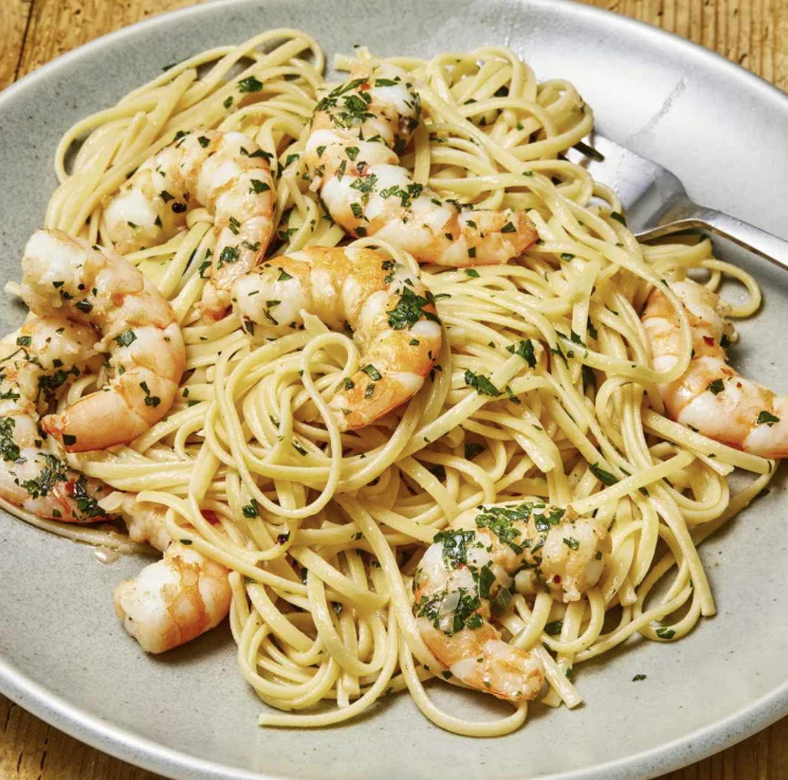

Shrimp Scampi with Pasta

Are you craving something delicious for dinner?
How about something Shrimpy and yummy?
Well do I have a dinner recipe for you!
Ingredients
- 1 (16 ounce) Packaged Linguine Pasta
- 4 Tablespoons of butter
- 5 Tablespoons of Extra-Virgin Olive Oil
- 2 Shallots, finely diced
- 2 Cloves Garlic, minced
- 1 Pinch Red Pepper Flakes (Optional)
- 1 Pound Shrimp, Peeled and Deveined
- 1 Pinch Kosher Salt and Freshly Ground Pepper
- 1/2 Cup dry white wine
- 1 Lemon, Juiced
- 1/4 Cup finely chopped parsley leaves
Directions
- Bring a Large pot of salted water to a boil; Cook Linguine in boiling water for 6 to 8 minutes or until nearly tender. Then Drain
- Melt 2 Tablespoons Butter and 2 Tablespoons Olive Oil in a large skillet over medium heat
- Cook and stir shallots, garlic, and red pepper flakes in the hot butter and oil until the shallots are translucent, 3 to 4 minutes
- Season shrimp with kosher salt and black pepper; add to skillet and cook until pink, stirring occasionally for 2 to 3 minutes, Remove shrimp from skillet when done and keep warm
- Pour White Wine and Lemon Juice into the skillet and bring to a boil while scraping off the browned bits of food from the bottom of the skillet with a wooden spoon
- Melt 2 Tablespoons of Butter in the skillet, then stir 2 Tablespoons of olive oil into the mixture, and bring to a simmer
- Toss in the Linguine, Shrimp, Parsley into the butter mixture until coated; then season with Salt and Black pepper. Then drizzle a Spoonful of olive oil to serve
- Enjoy!
It's as SHRIMPLE as that!